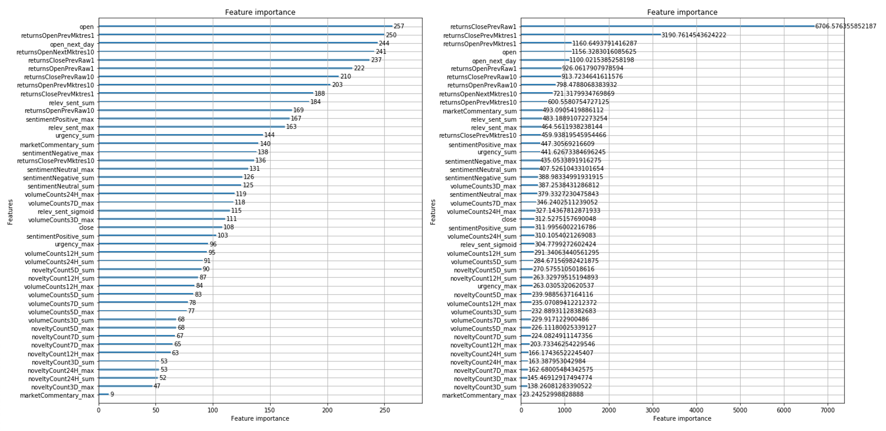

Stock Price Movement Prediction with News Data
December 8, 2018
The ubiquity of data today makes ingesting and interpreting useful data a big issue. However, given more reliable information, investors make better decisions. In this project, we implemented Machine Learning (ML) skills to improve traditional prediction methods for stock markets movement.
The project was derived from a challenge on Kaggle competitions, Two Sigma: Using News to Predict Stock Movements. The goal is to use market data and news data (Sentiment Analysis had been done already) to predict stock return movements (0 for negative returns and 1 for positive returns) for the next day.
Decent data sets are given which included both market stock data and organized news data. By implementing great data analysis methods and advanced ML techniques, our team achieved better scores on stock markets movement prediction with news.
The overall workflow is as follows:
The image below showed quantiles for Stocks Returns. If you've already noticed, there were higher deviations during and after financial crisis (2008 to 2009). One challenge arising here was about deciding which period of data should be used for modeling.
Light GBM takes in all the features as input and returns the importance of each feature with respect to either feature number counts or gains. See the image below. It was useful to select proper representative features for modeling.
After implementing several supervised machine learning methods for classification, we got the following conclusion. Among all the models, ANN performs the best. It has proper accuracy for testing set and runs faster than SVM.
Tag: Python, Machine Learning, Data Analysis.